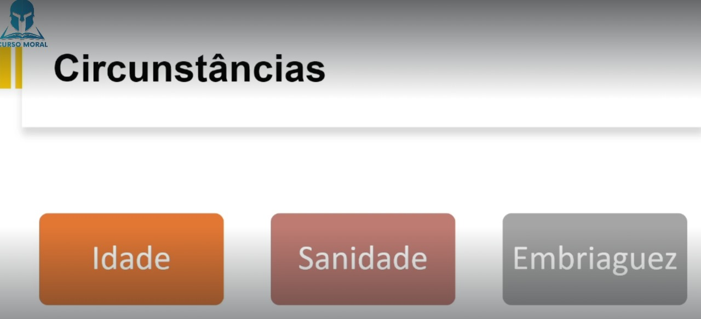
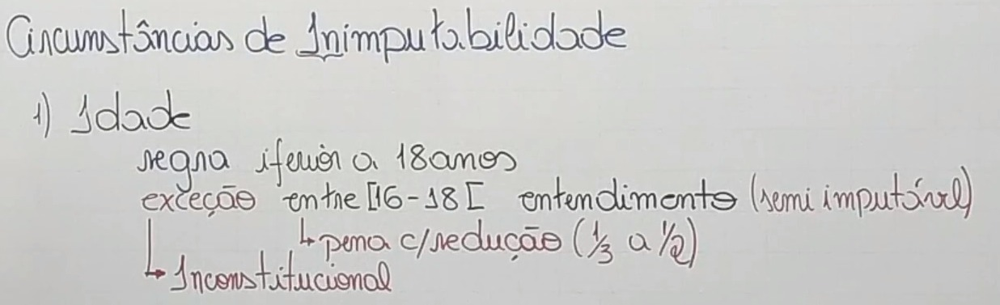
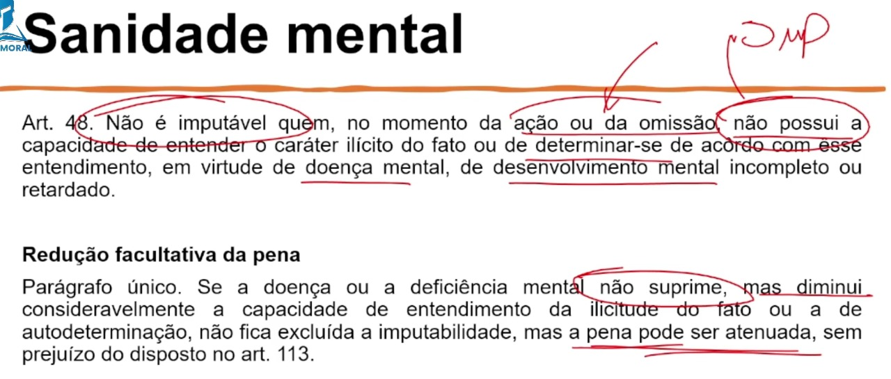
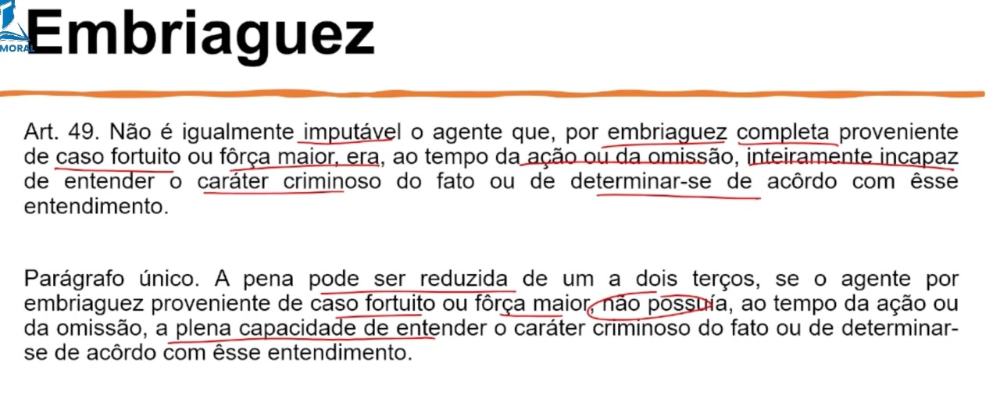

⚖ TÍTULO I - DA APLICAÇÃO DA LEI PENAL MILITAR (Art. 1º ao 28)
⚖ TÍTULO II - DO CRIME (Art. 29 ao 47)
⚖ TÍTULO IV - DO CONCURSO DE AGENTES (Art. 53 e 54)
⚖ TÍTULO V - DAS PENAS (Art. 55 ao 109)
⚖ TÍTULO VI - DAS MEDIDAS DE SEGURANÇA (Art. 110 e 120)
⚖ TÍTULO VII - DA AÇÃO PENAL (Art. 110 e 120)
⚖ TÍTULO VIII - DA EXTINÇÃO DA PUNIBILIDADE (Art. 123 e 135)
TÍTULO III
DA IMPUTABILIDADE PENAL (Art. 48 ao 52)
🎥 14. Da Imputabilidade

O menor de dezoito anos é inimputável,
salvo se, já tendo completado dezesseis anos, revela suficiente desenvolvimento psíquico para entender o caráter ilícito do fato e determinar-se de acôrdo com êste entendimento. Neste caso, a pena aplicável é diminuída de um têrço até a metade. (Art. 50) (Inconstitucional)
Equiparam-se aos maiores de dezoito anos, ainda que não tenham atingido
essa idade:
📍 a) os militares;
📍 b) os convocados, os que se apresentam à incorporação e os que, dispensados
📍 temporàriamente desta, deixam de se apresentar, decorrido o prazo de licenciamento;
📍 c) os alunos de colégios ou outros estabelecimentos de ensino, sob direção e disciplina
militares, que já tenham completado dezessete anos.
(Art. 51) (Inconstitucional)
Os menores de dezesseis anos, bem como os menores de dezoito e maiores
de dezesseis inimputáveis, ficam sujeitos às medidas educativas, curativas ou disciplinares
determinadas em legislação especial. (Art. 52) (Constitucional)


Não é imputável quem, no momento da ação ou da omissão, não possui a
capacidade de entender o caráter ilícito do fato ou de determinar-se de acôrdo com êsse
entendimento, em virtude de doença mental, de desenvolvimento mental incompleto ou
retardado. (Art. 48)
Se a doença ou a deficiência mental não suprime, mas diminui
consideràvelmente a capacidade de entendimento da ilicitude do fato ou a de
autodeterminação, não fica excluída a imputabilidade, mas a pena pode ser atenuada, sem
prejuízo do disposto no art. 113. (Art. 48, Parágrafo único.)


Não é igualmente imputável o agente que, por embriaguez completa
proveniente de caso fortuito ou fôrça maior, era, ao tempo da ação ou da omissão,
inteiramente incapaz de entender o caráter criminoso do fato ou de determinar-se de acôrdo
com êsse entendimento.(Art. 49)
Parágrafo único. A pena pode ser reduzida de um a dois terços, se o agente por embriaguez proveniente de caso fortuito ou fôrça maior, não possuía, ao tempo da ação ou da omissão, a plena capacidade de entender o caráter criminoso do fato ou de determinarse
de acôrdo com êsse entendimento.
